Chapter 4: The Marathas
The other Rebel State; Panipat 1761 (Jats stayed neutral but sent supplies; Rohillas and Bangash backed Abdali); Mahadji Scindia 68-94's Campoo as a model for Surajmal 56-63's reform.
| Year | Paper | Topic | Answer |
|---|---|---|---|
| 2010 | Prelims | Ahmad Shah Abdali's immediate reason for Panipat 1761 | (A) To avenge the expulsion by the Marathas of his viceroy Timur Shah from Lahore |
| 2017 | Mains | Fragmented polity in mid-18th century | |
The weak Mughal centre offered rebels a middle path; Jats, Bangash Pathans and Rohillas turned local force into rule, but each stood on an outside prop and fell when it went.
Read it like a film first. Then go to the notes: every fact below is expanded there.
Story spine: Delhi's weakness offers rebels a deal (the middle path), so Jats, Bangash Pathans and Rohillas turn local force into rule; but each stands on an outside prop (Abdali, Maratha backing) and falls when the prop is removed, and Abdali's own reason for coming was a family quarrel over Lahore.
| Character | Role in the story | Hook |
|---|---|---|
| Churaman 95-21 Jat | Zamindar who formally founded the Jat Kingdom of Bharatpur in 1695 | The Founder |
| Surajmal 56-63 | Jat ruler at the peak; builder of Lohagarh; sent supplies to the Marathas at Panipat | The Iron Fort Builder |
| Sadasiv Rao Bhau | Maratha commander who rejected Surajmal's guerrilla plan at Panipat | The Rejecter of the Plan |
| Sher Shah 40-45 | Born Farid Khan; beat Humayun 30-40 at Kanauj in 1540; five reforming years | The Five-Year Reformer |
| Md Khan Bangash | Pathan warlord; 12,000 troops for Farrukhsiyar 13-19; founded Farrukhabad in 1714 | The Maker |
| Qaim Khan | Md Khan's son; killed in 1749 by the scheme of Safdar Jung 39-54 | The Quarry |
| Ahmad Khan Bangash 50-71 | Retook Farrukhabad in 1750; fought beside Abdali in 1761 | The Avenger |
| Safdar Jung 39-54 | Nawab of Awadh and Wazir; engineered Qaim Khan's death and annexed Farrukhabad | The Predator Neighbour |
| Ali Md Khan | Rohilla leader from 1721; stopped taxes in 1739; Subadar in 1740 | Absorb, Absent, Appointed |
| Najib-ud-Daula 57-70 | Rohilla leader who backed Abdali at Panipat; Delhi under his influence 1761-71 | The Delhi Rohilla |
| Ahmad Shah Abdali 47-72 | Afghan invader; the prop of both Afghan kingdoms | The Prop |
| Timur Shah | Abdali's son and Governor of Punjab and Kashmir; expelled from Lahore in March 1758 | The Son |
| Raghunath Rao 73-74 | Maratha leader who drove Timur Shah out of Lahore | The Expeller |
| Mahadji Scindia 68-94 | Retook Delhi in 1771 and let Shah Alam II 60-06 return | The Delhi Retaker |
| Key term | In plain words |
|---|---|
| Middle path | The deal between king and rebel: the rebel serves as a Mansabdar; the emperor grants dynastic governorship and the Watan Jagir |
| Watan Jagir | The rebel's own territory, accepted by the king as his Jagir |
| SS / RS / AAS | Successor States (Bengal, Awadh, Hyderabad); Rebel States (Marathas, Rohilkhand, Farrukhabad, plus Sikhs); Already Autonomous States (Rajputs, Mysore, plus Travancore) |
| Katehr | Western Uttar Pradesh around Bareilly and Moradabad; renamed Rohilkhand in 1740 |
| Rohilla | An Afghan mercenary hired by Zamindars in Katehr; from 'Roh', the Afghan homeland |
| Bangash Pathans | The Afghan clan of Farrukhabad, in central Uttar Pradesh |
| Suri Interregnum | 1540-55, the brief Afghan interruption of Mughal rule; ended when Humayun 30-40 retook Delhi after Sirhind |
| Dak Chowki | Sher Shah 40-45's reliable postal-relay system ('like a relay race') |
| Rupiya | Sher Shah 40-45's standardised silver coin, the basis of Indian currency for centuries |
| Patta / Qubuliat | One revenue document in two copies ('head and tail'): Patta with the ryot, Qubuliat with the government |
| Subadar | The title (i.e. a Mansabdar) Md Shah 19-48 gave Ali Md Khan in 1740 |
| Ceded Provinces | Territories Awadh handed over under the 1801 Subsidiary Alliance; Farrukhabad was merged into them |
Remember it as Rebels take the middle path and become Mughal Mansabdars; Jats, Bangash Pathans and Rohillas rise on an outside prop (Abdali, Maratha backing) and fall when it goes.
| Year and paper | What was asked | The answer or trap | Where in this chapter |
|---|---|---|---|
| Prelims 2010 | The immediate reason for Abdali's invasion and Third Panipat | To avenge the expulsion of his son Timur Shah from Lahore (March 1758) by Raghunath Rao 73-74. Abdali's son was Governor of Punjab and Kashmir | The Prelims 2010 alert and the slides that show the question, the answer and the reason |
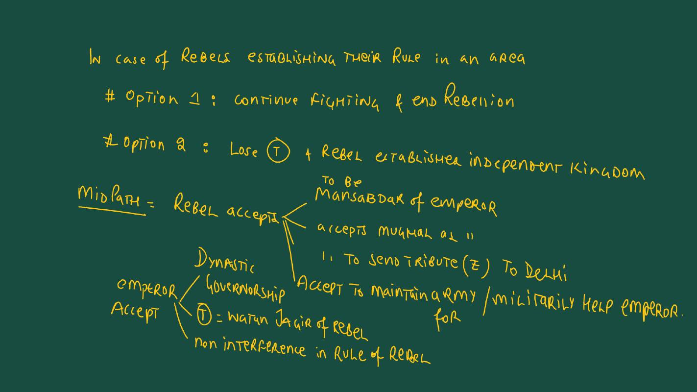
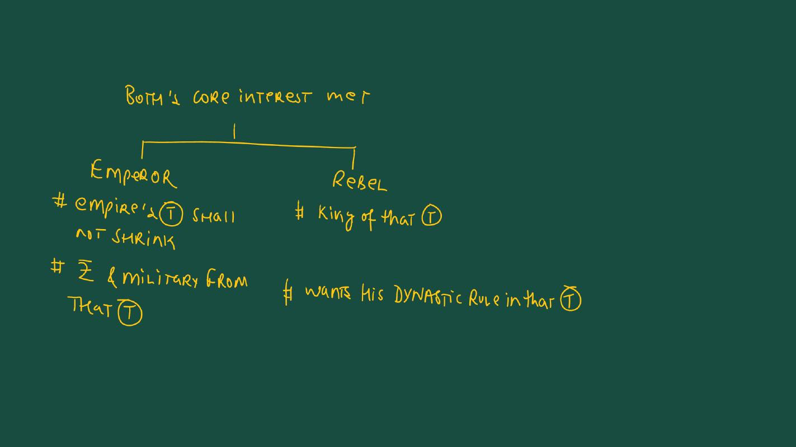
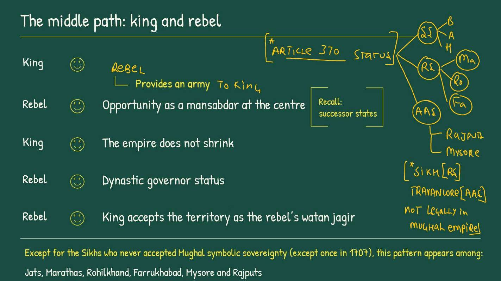
| Side | What it gets on the middle path |
|---|---|
| King (Mughal) | The rebel provides an army; the empire does not shrink |
| Rebel | Opportunity as a Mansabdar at the centre (recall successor states); dynastic governor status; the king accepts the territory as the rebel's Watan Jagir |
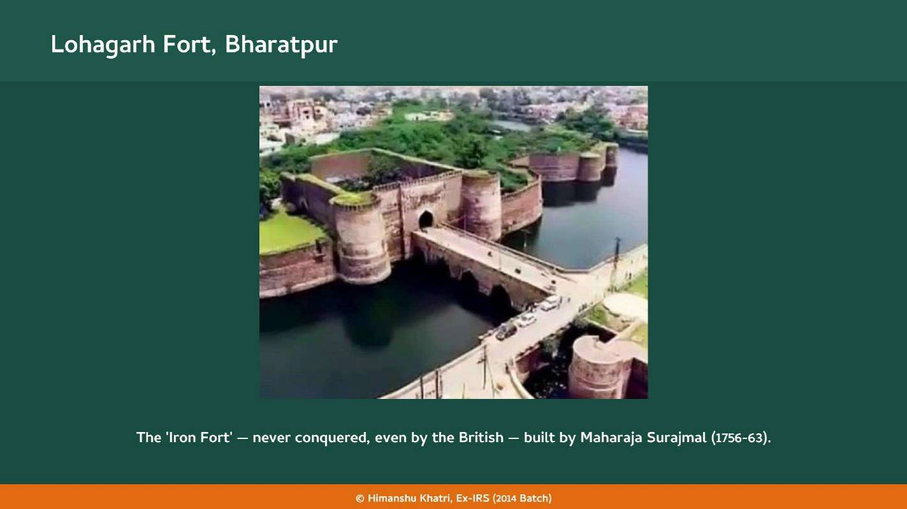
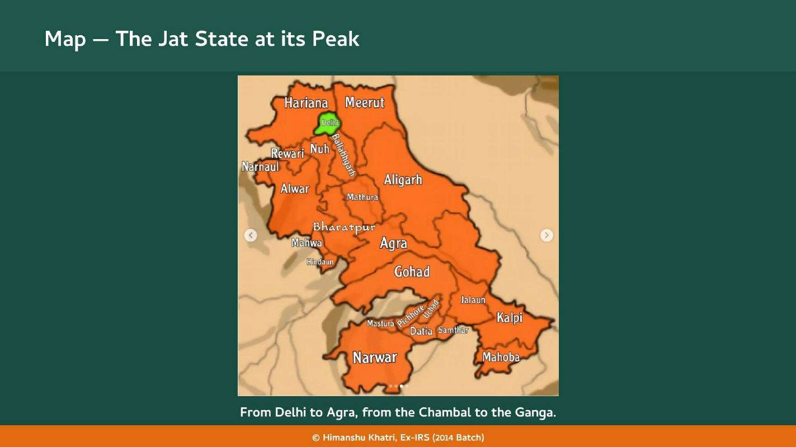
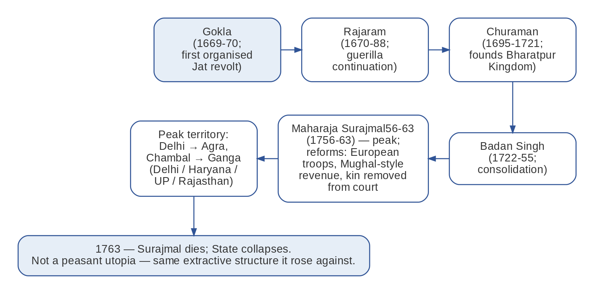
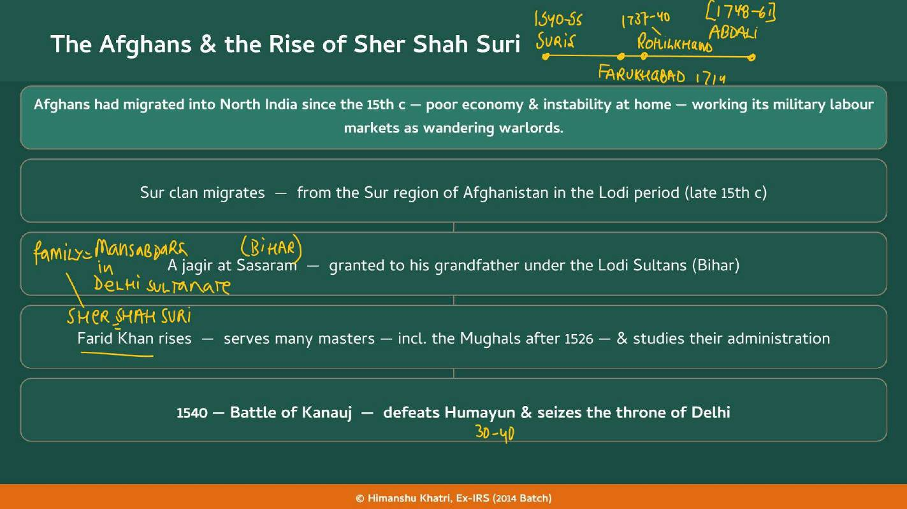
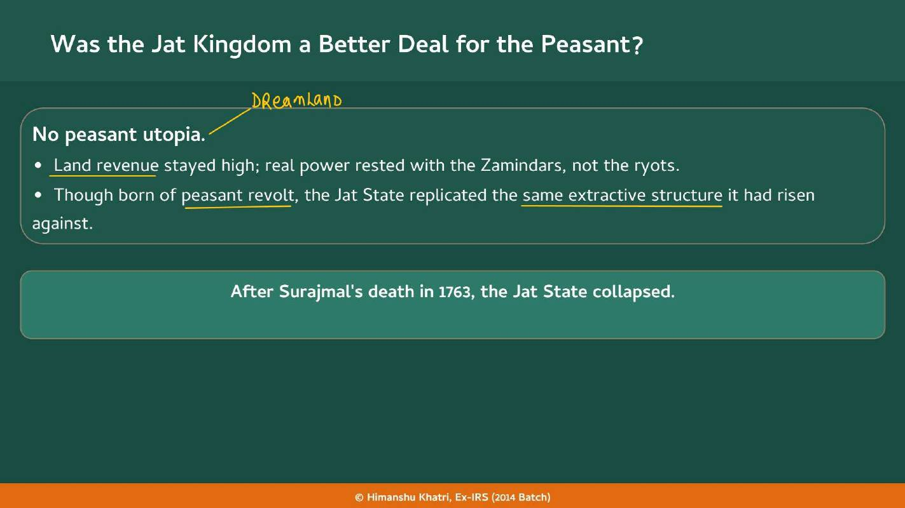
| Reform | What he did | Teacher's note |
|---|---|---|
| Administrative hierarchy | Centre, Province (Suba), District (Sarkar), Sub-district (Pargana) | Akbar 56-05 later adopted it almost wholesale |
| Grand Trunk Road | Upgraded the Uttarapath connecting Bengal to the North-West Frontier | Boosts economy and trade |
| Dak Chowki | A reliable postal-relay system | "Like a relay race" |
| The Rupiya | A standardised (by weight and value) silver coin, the basis of Indian currency for centuries | Important: the degree of trust between buyer and seller; standardisation needs a central authority |
| Revenue | Land surveys and a fair land revenue demand fixed directly with the peasant, cutting out the middleman Zamindar | Recorded in a Patta (with the ryot) and a Qubuliat (with the government): "head and tail," one document in two copies |
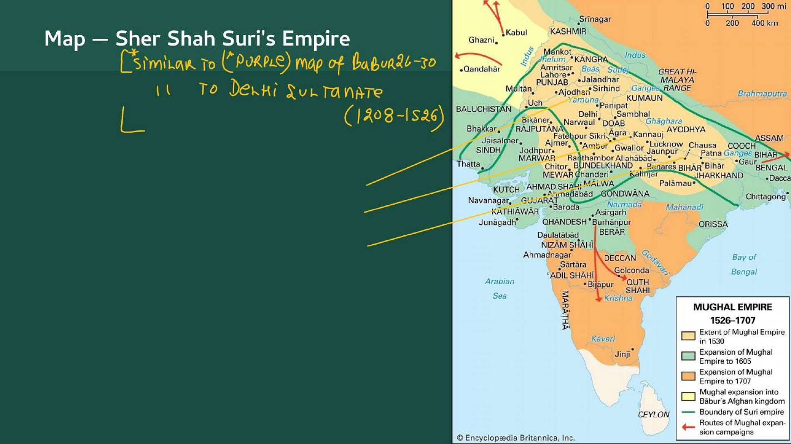
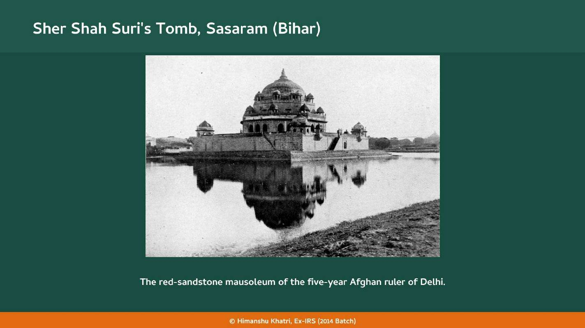
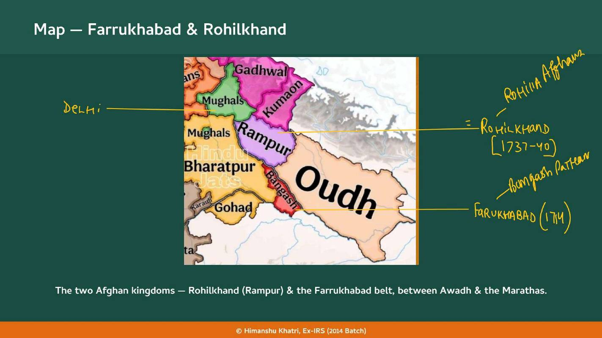
| Ruler | What happened |
|---|---|
| Md Khan Bangash (1714-43) | A Pathan warlord who backed Farrukhsiyar 13-19 with 12,000 troops; rewarded with the rank of Nawab and revenue assignments near the Ganga; founded Farrukhabad (1714), naming it after the emperor. Died 1743, succeeded by his son Qaim Khan. |
| Qaim Khan (1743-49) | In 1749 Safdar Jung 39-54 (Nawab of Awadh and Wazir of the emperor) engineered his death in battle; Farrukhabad was annexed to Awadh and plundered. |
| Ahmad Khan Bangash 50-71 | Retook it in 1750; driven out in 1751-52 by Marathas and Jats; fought beside Abdali at Panipat (1761) to recover it; the EIC annexed it in 1802. The Bangash Pathans joined the 1857 Revolt but were defeated. |
| State | How it was built |
|---|---|
| The Jats | From an agrarian base upward: Zamindar-led revolt, then territory, then a reforming ruler (Surajmal 56-63) |
| Farrukhabad | From Mughal court politics downward: 12,000 troops for Farrukhsiyar 13-19, then a Nawab title, then a city, then a dynasty |
| Rohilkhand | From the ground up over two decades: hired mercenaries, then consolidation, then independence in the 1739 Delhi paralysis |
| The common rule | Each needed external support to peak (Abdali for the Afghan kingdoms, Maratha tactical backing for Surajmal 56-63), and each collapsed once that support was removed |
| Feature | Jats (Bharatpur) | Farrukhabad | Rohilkhand |
|---|---|---|---|
| Founder and year | Churaman 95-21, 1695 | Md Khan Bangash, 1714 | Ali Md Khan, 1721 (recognised 1740) |
| Base | Agrarian Zamindars, peasant discontent over LR | Pathan warlord with 12,000 troops, court politics | Afghan mercenaries hired in Katehr |
| Peak | Surajmal 56-63, 1756-63 | Ahmad Khan with Abdali, 1761 | Najib-ud-Daula 57-70, 1761-71 (Delhi influence) |
| Collapse | 1763, Surajmal 56-63 dies | 1749 annexed by Awadh; 1802 EIC | 1774 Awadh plus EIC; Rampur remains |
| Year | What happened |
|---|---|
| 1486 | Farid Khan (Sher Shah 40-45 Suri 40-45) born at Sasaram (around) |
| 1526 | Babur 26-30 defeats the Lodis; Suri serves the Mughals |
| 1540 | Battle of Kanauj: Sher Shah 40-45 defeats Humayun 30-40, takes Delhi ★ |
| 1545 | Sher Shah 40-45 dies; Suri Interregnum (1540-55) continues |
| 1555 | Humayun 30-40 retakes Delhi after the Battle of Sirhind |
| 1605 | Jahangir 05-27's reign begins (Jat hostility traced from here) |
| 1669 | Gokla leads the first organised Jat revolt |
| 1695 | Churaman 95-21 founds the Jat Kingdom of Bharatpur ★ |
| 1714 | Md Khan Bangash founds Farrukhabad ★ |
| 1721 | Daud Khan dies; Ali Md Khan takes over Katehr |
| 1722 | Badan Singh consolidates the Jat State |
| 1739 | Nadir Shah paralyses Delhi; Ali Md Khan stops paying taxes |
| 1740 | Md Shah grants Ali Md Khan the Subadar title; Rohilkhand ★ |
| 1743 | Md Khan Bangash dies; Qaim Khan |
| 1749 | Safdar Jung 39-54 engineers Qaim Khan's death; Farrukhabad annexed to Awadh |
| 1750 | Ahmad Khan Bangash 50-71 retakes Farrukhabad |
| 1751 | Marathas and Jats drive Ahmad Khan out (to 1752) |
| 1756 | Surajmal 56-63's reign begins |
| 1758 | Raghunath Rao 73-74 expels Timur Shah from Lahore ★ |
| 1761 | Third Panipat: Farrukhabad and Rohilkhand back Abdali ★ |
| 1763 | Surajmal 56-63 dies; the Jat State collapses |
| 1765 | Treaty of Allahabad (Awadh-EIC military alliance) |
| 1770 | Najib-ud-Daula 57-70 dies |
| 1771 | Mahadji Scindia 68-94 retakes Delhi |
| 1774 | Awadh with EIC help annexes most of Rohilkhand; Rampur remains |
| 1801 | Awadh's Subsidiary Alliance; Rampur under the EIC |
| 1802 | EIC annexes Farrukhabad |
| 1857 | Bangash Pathans join the Revolt |
The other Rebel State; Panipat 1761 (Jats stayed neutral but sent supplies; Rohillas and Bangash backed Abdali); Mahadji Scindia 68-94's Campoo as a model for Surajmal 56-63's reform.
Safdar Jung 39-54 of Awadh annexes Farrukhabad; Awadh, with the EIC, annexes Rohilkhand; the Treaty of Allahabad 1765 follows Buxar.
Nadir Shah's 1739 invasion, the Jahandar Shah 12-13 and Farrukhsiyar 13-19 struggle, and the collapsing Mughal centre.
Sher Shah 40-45's Suba, Sarkar, Pargana structure, the Patta-Qubuliat revenue and the Rupiya that Akbar 56-05 inherited.
The Sikhs: the only one of the regional powers that never accepted Mughal symbolic sovereignty (except once, 1707).
Read the question, answer in your head, then tap to check.
| What is the middle path? | The rebel accepts Mansabdar status, Mughal sovereignty, tribute and military help; the emperor accepts dynastic governorship, a Watan Jagir and non-interference. |
| Which rebel power never accepted Mughal symbolic sovereignty? | The Sikhs (except once in 1707). |
| Teacher's Article 370 link? | These states had special status inside the Mughal empire, like a state within a state. |
| Teacher's importance of Ch 5? | Less important: Mains 0, Prelims some, useful in a larger Mains answer. |
| Why did the Jats resist the Mughals? | Harsh land revenue and the drive to subordinate local autonomy; Zamindar-led. |
| Jat chain? | Gokla 1669-70, Rajaram 89-00, Churaman 95-21 1695 (founder), Badan Singh, Surajmal 56-63 (peak), collapse 1763. |
| Extent at Surajmal 56-63's peak? | Delhi to Agra; Chambal to Ganga (Delhi, Haryana, UP, Rajasthan). |
| Surajmal 56-63's three reforms? | European soldiers, Mughal-style revenue system, removal of relatives from court. |
| What is Lohagarh? | The Iron Fort of Bharatpur, never conquered, even by the British. |
| Was the Jat State a peasant utopia? | No: high LR, power with Zamindars, the same extractive structure. |
| Who was Sher Shah 40-45 Suri 40-45? | Born Farid Khan, about 1486 at Sasaram; defeated Humayun 30-40 at Kanauj in 1540; ruled 1540-45. |
| Why did the Afghans migrate to North India? | Poor economy and instability at home; they became wandering warlords in military labour markets. |
| Sher Shah 40-45's reforms? | Suba-Sarkar-Pargana, GT Road, Dak Chowki, Rupiya, land surveys with peasant-direct revenue. |
| Patta and Qubuliat (teacher)? | Head and tail: one document in two copies; Patta with the ryot, Qubuliat with the government. |
| What was the Suri Interregnum? | 1540-55; ended when Humayun 30-40 retook Delhi after the Battle of Sirhind in 1555. |
| How did Farrukhabad get its name? | Md Khan Bangash named it after Farrukhsiyar 13-19 after his first town, Mohammadabad, annoyed the emperor. |
| What did Md Khan Bangash get for 12,000 troops? | The rank of Nawab and revenue assignments near the Ganga. |
| What happened in 1751-52 to Ahmad Khan? | Driven out by Marathas (Holkar, Scindia) and Jats at Awadh's request; later restored for half of Farrukhabad. |
| What are the Ceded Provinces? | Territories Awadh handed over under the 1801 Subsidiary Alliance; Farrukhabad merged into them. |
| Where does Rohilla come from? | Roh, the Afghan homeland. |
| Who was Ali Md Khan? | Adopted son of Daud Khan; took over in 1721; Subadar title in 1740. |
| Why is 1739 important for Rohilkhand? | Nadir Shah paralysed Delhi; Ali Md Khan stopped paying taxes and ruled independently. |
| How did the Mughals respond to Rohilkhand? | Co-option: the Subadar title in 1740; Katehr became Rohilkhand. |
| How did Rohilkhand end? | Najib's death 1770; Delhi lost 1771; Awadh plus EIC annexed most of it in 1774; Rampur remained. |
| Why did Awadh and the EIC cooperate in 1774? | The Treaty of Allahabad (1765) made them military allies. |
| Who was Adina Beg Khan? | Governor of Punjab under the Marathas for Rs 75 lakh a year. |
| Who was Sabaji Scindia? | Commander of the Maratha garrisons at Attock and Peshawar. |
| Teacher's phrase for Maratha reach? | Attock se Cuttack. |
Tap the card to flip.